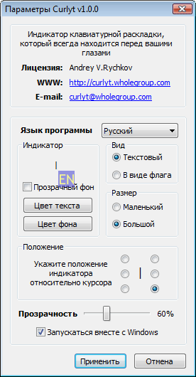

Программа Curlyt представляет собой индикатор активной раскладки клавиатуры (текущего языка), который всегда будет находиться перед вашими глазами там, где вы печатаете! У вас больше не будет раздражения от того, что вы напечатали текст, забыв переключиться на нужный вам язык. Вы сможете настроить внешний вид индикатора на свой вкус так, что он не будет мешаться при наборе текста, но в тоже время будет качественно выполнять свое прямое предназначение - информировать о текущей в данный момент раскладке. Индикатор активного языка Curlyt будет особенно полезен тем, кто часто работает одновременно сразу с несколькими приложениями (документами).
Curlyt работает на всех основных версия Windows (2000/XP/2003/Vista/2008, включая x64 версии).
Для изменения параметров работы программы Curlyt кликните кнопкой мыши на значке программы в правом нижнем углу рабочего стола (Windows трей). В появившемся меню выберите пункт «Параметры».

Окно параметров программы разделено на две части.
В верхней отображается справочная информация: владелец лицензии, адрес сайта программы Curlyt, e-mail разработчика.
В нижней части вы можете изменить язык программы и параметры отображения индикатора:
Индикатор - в этом окне можно посмотреть, как будет выглядеть индикатор с выбранными параметрами. Так же здесь можно изменить цветовую гамму индикатора (если выбран режим отображения в виде текста).
Вид - здесь вы можете установить внешний облик индикатора активной раскладки клавиатуры. Индикатор может быть в виде двухбуквенного текстового сокращения текущего языка, либо в виде флага страны активной раскладки.
Размер - в программе Curlyt для индикации текущего языка ввода предусмотрено два размера индикатора 16x16 (маленький) и 24x24 (большой) пикселов.
Прозрачность - изменение прозрачности индикатора позволяет сделать его менее заметным и отвлекающим от набора текста, что не помешает использовать все преимущества программы Curlyt для индикации активного языка (0% — отсутствие прозрачности).
Положение - здесь укажите предпочтительное расположение индикатора активного языка относительно текстового курсора.
Запускаться вместе с Windows - программа Curlyt будет автоматически запускаться каждый раз при старте операционной системы Windows (установлен по умолчанию).